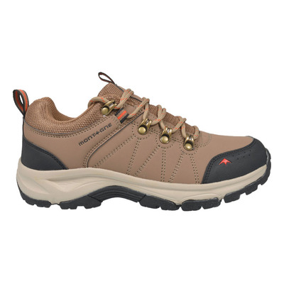
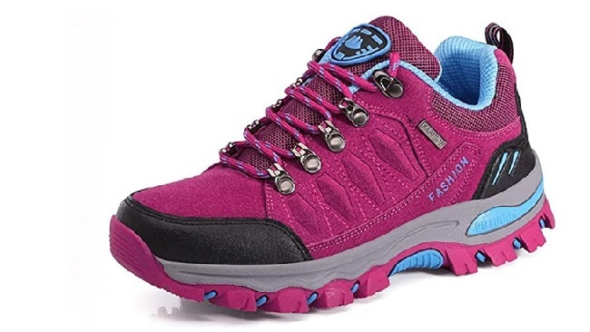
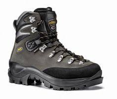
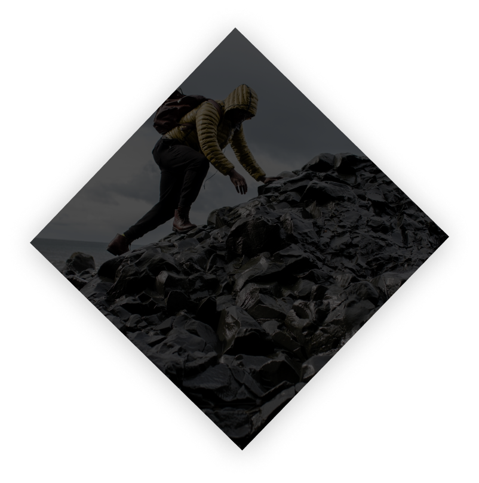

Botas y Zapatos




Everest es tu destino para la mejor ropa de invierno. Nos dedicamos a ofrecerte la mayor comodidad y estilo para que puedas enfrentar el frío con confianza.
Conoce másNuestra primera seccion está diseñado para brindarte la mejor selección de abrigos y chaquetas para mantenerte caliente y a la moda durante todo el invierno.
Ver másEn la segunda seccion nos enfocamos en ofrecerte una amplia variedad de bufandas, gorros y guantes para complementar tu atuendo invernal y protegerte del frío extremo.
Ver másEn nuestra tercer seccion, encontrarás botas y zapatos resistentes al agua y aislados térmicamente para mantener tus pies calientes y secos en cualquier condición climática.
Ver másEverest fue fundada en 2010 por Jonathan Gayoso y Nadia Cazal con la visión de proporcionar ropa de invierno de alta calidad a precios asequibles para todos.
Nos dedicamos a ofrecer prendas de vestir de invierno que combinen estilo y funcionalidad para que puedas mantenerte abrigado y lucir bien en cualquier ocasión.
Nuestro equipo está formado por diseñadores de moda experimentados y entusiastas de la moda que trabajan arduamente para ofrecerte productos de la más alta calidad y un servicio excepcional.

¡Me encanta la calidad de los abrigos de Everest! Son muy cómodos y duraderos. ¡Definitivamente los recomiendo!

Compré un par de botas de invierno de Everest y estoy muy impresionado con su rendimiento. Mantienen mis pies calientes y secos incluso en la nieve.

Everest tiene una excelente selección de bufandas y guantes. ¡Son perfectos para complementar mi atuendo de invierno!